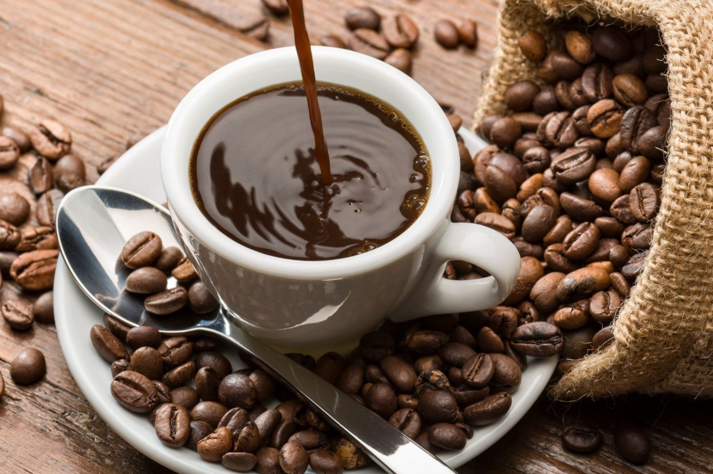
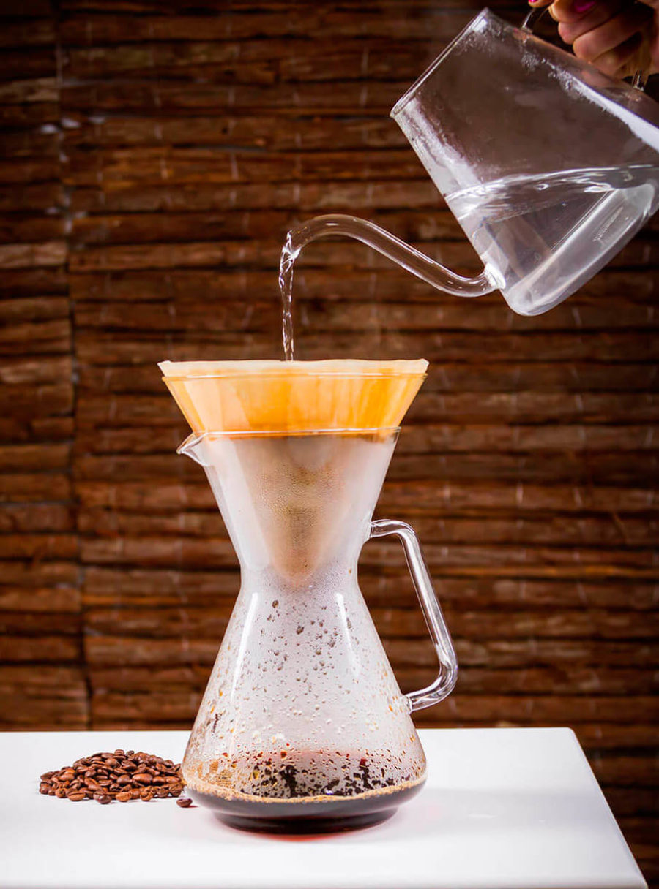

¡Bienvenido al mundo del café!
El café es una bebida aromática y deliciosa que se ha convertido en parte esencial de la vida de millones de personas alrededor del mundo. En esta página web exploraremos el fascinante mundo del café, desde sus orígenes hasta su preparación y sus beneficios para la salud.
Tipos de café
Existen dos tipos principales de café: Arábica y Robusta. Cada uno tiene sus propias características y sabor.
| Tipo | Características | Sabor |
|---|---|---|
| Arábica | Menos cafeína, acidez suave, sabor complejo y aromático | Delicado, floral, frutal |
| Robusta | Más cafeína, acidez fuerte, sabor intenso y amargo | Chocolate, caramelo, especias |
Preparación del café
Espresso
El espresso es la base de muchas bebidas de café. Se prepara forzando agua caliente a través de café molido finamente. Un café intenso y concentrado, caracterizado por su sabor fuerte, crema espesa y rápida extracción. Prepararlo en casa requiere una máquina de espresso y café molido fino. Muele el café fino, llena el portafiltro, colócalo en la máquina, extrae el espresso (25-30 segundos para 30 ml) y sirve en taza precalentada. Recuerda usar agua fresca y filtrada, precalentar la taza y limpiar la máquina regularmente.

Café americano
El café americano se prepara diluyendo espresso con agua caliente. Una versión más ligera del espresso, se obtiene diluyendo un espresso con agua caliente. Prepara un espresso, calienta agua (90-96°C), agrega agua al espresso en proporción 1:2 (una parte de espresso por dos de agua), mezcla y disfruta. Experimenta con la proporción, agrega leche o crema si deseas, y endulza a tu gusto.
Café filtrado
El café filtrado se prepara vertiendo agua caliente sobre café molido en un filtro. Para preparar un café filtrado delicioso, utiliza café en grano fresco molido a medio-grueso, agua filtrada caliente (entre 90 y 96°C) y una cafetera de filtro (go Drip, prensa francesa, V60, etc.). Mide la proporción adecuada (15-20g café/250ml agua), coloca el café en el filtro, vierte el agua caliente en movimientos circulares y disfruta. Experimenta con diferentes tipos de café, moliendas y métodos para encontrar tu combinación perfecta.
Beneficios del café
El café no solo es una bebida deliciosa, sino que también ofrece diversos beneficios para la salud.
- Mejora el estado de ánimo y la concentración.
- Reduce el riesgo de algunas enfermedades crónicas.
- Es una fuente de antioxidantes.
- Puede mejorar el rendimiento deportivo.
Contáctanos
Si tienes alguna pregunta o comentario, no dudes en contactarnos.